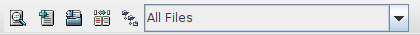

Toolbar
The toolbar for the QVCS-Enterprise client application provides quick access to a number of common version control actions.

If you hold your mouse over the toolbar button, you will see a context balloon help pop up with a very brief hint that describes the function of the button. From left to right, the buttons are:
 Get -- get the most recent revision for the selected file. Get -- get the most recent revision for the selected file.- Add -- add the selected file to version control.
 Check In -- check in a new revision to the selected file. Check In -- check in a new revision to the selected file.- Define File Groups -- display the 'Define File Groups' dialog.
- Compare -- compare the local workfile to the most recent revision of that file in the database.
 Recurse Files -- toggle directory recursion. When recursion is enabled (and the file list pane displays all files in any subdirectories of the currently selected directory), an open folder icon will be displayed. When recursion is disabled (and the file list shows only the files of the currently selected directory), a folder hierarchy Recurse Files -- toggle directory recursion. When recursion is enabled (and the file list pane displays all files in any subdirectories of the currently selected directory), an open folder icon will be displayed. When recursion is disabled (and the file list shows only the files of the currently selected directory), a folder hierarchy  icon will be displayed. icon will be displayed.
To the right of the 'Recurse Files' button, there is a drop down combo box that shows the name of the currently selected filter. When you first run the QVCS-Enterprise client application, you will see that there are 4 pre-defined filters:
- All files
- C++ and .h source files
- Java source files
- Javascript files
A description of these filters and how to define additional filters is available in the Filters section.
The toolbar buttons are designed to bypass the use of dialogs where possible. For example, clicking the Get button on the toolbar will get the most recent revision for the selected file(s), no questions asked. If you want more control over the action to be performed, then you should select the file(s), and then right click, and select the action you want to perform from the pop-up context menu. Performing an operation by using the context menu will cause a dialog to appear that allows you to more finely tune the operation that is to be performed.
|